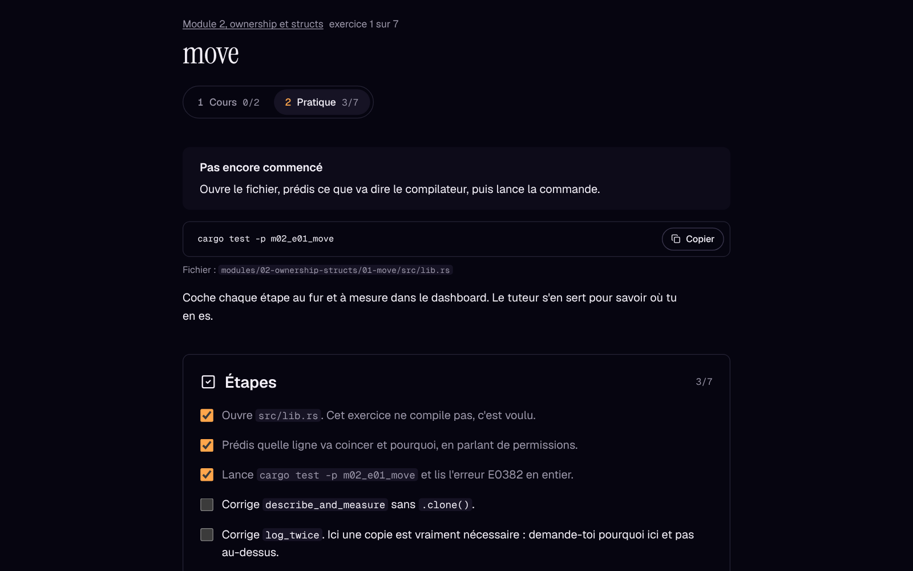

Apprends Rust avec un agent qui refuse de coder à ta place
Tu viens de TypeScript et tu veux écrire des backends en Rust. Claude Code joue le tuteur.
En français, avec l’anglais technique.
$ cargo test -p m02_e01_move error[E0382]: borrow of moved value: `title` --> modules/02-ownership-structs/01-move/src/lib.rs:8:15 | 6 | pub fn describe_and_measure(title: String) -> (String, usize) { | ----- move occurs because `title` has type `String` 7 | let description = describe(title); | ----- value moved here 8 | let len = title.len(); | ^^^^^ value borrowed here after move help: consider cloning the value if the performance cost is acceptable
- toi
- Je mets un .clone() ?
- tuteur
- Avant ça : après l’appel à describe(title), qui possède encore la String ?
- toi
- describe. Donc title a perdu ses permissions.
- tuteur
- Voilà. De quoi as-tu besoin ensuite : la String entière, ou juste sa longueur ?
01-move du module 02.Un tuteur, pas un ghostwriter
Il te pose des questions, t’aide à lire le compilateur et relit ton code. Chaque ligne, c’est toi qui l’écris.
Un agent qui écrit ton code te fait livrer plus vite, mais tu n’apprends presque rien. Ici, le repo est configuré pour que Claude fasse ce que fait un bon prof : il te fait prédire, lire les erreurs et expliquer ce que tu as écrit.
L’agent qui code
« Fais passer ce test. » Le test passe et tu ne sais toujours pas ce qu’est un move.
L’agent qui enseigne
« Que devient
titleaprès l’appel ? » Tu réponds, tu corriges, et tu sais pourquoi ça compile.
Le cours, puis la pratique
Le dashboard local ouvre l’exercice en cours : les sections du Rust Book, l’idée avec son diagramme, puis les étapes à cocher et l’état de cargo test.

01-move. En local, il relance les tests à chaque sauvegarde ; sur ce site, il sert de lecteur de fiches.Ce que contient le repo
Tout est versionné. Tu peux lire chaque pièce, la copier et l’adapter à un autre sujet.
Un contrat pédagogique
Huit règles que le tuteur ne transgresse pas : jamais de solution, des indices en trois paliers, un pont avec TS pour chaque concept, prédire avant de compiler.
CLAUDE.mdDes hooks qui verrouillent
Une règle écrite se contourne, un hook non. L’un empêche l’agent d’éditer tes exercices, l’autre lance clippy après chaque modification.
scripts/Des commandes de séance
/next, /hint, /explain-error, /review, /quiz. Par exemple, /review commence par te demander d’expliquer ton code.
Des tests rouges
Un crate par exercice, une fiche de cours puis une fiche pratique. Certains exercices ne compilent pas au départ, exprès.
modules/Une mémoire
Le tuteur note tes indices et tes erreurs récurrentes, puis te repose les notions fragiles au début des séances suivantes.
PROGRESS.mdUn projet fil rouge
Taskr, une API de tâches qui grandit à chaque module jusqu’à Axum et Postgres. L’agent pose l’échafaudage et te laisse des TODO(human).
Une séance de trente minutes
Le format est pensé pour les soirs de semaine : un exercice, une notion, et tu t’arrêtes.
Le cours d’abord
/nextte pose deux ou trois questions de rappel, puis ouvre la fiche : les sections du Rust Book et leurs quiz, l’équivalent TS, un diagramme.Tu prédis
Tu dis ce que le compilateur va répondre, puis tu lances
cargo test.Tu bloques, tu demandes
/hintdonne une question, puis le concept, puis un exemple sur un autre cas. Jamais ta solution.Tu expliques
Tests verts :
/review. Tu expliques ton code en deux phrases, puis l’agent le relit comme un dev Rust senior.
Le parcours
Le parcours suit la version Brown du Rust Book, avec ses quiz et son modèle de permissions. Les deux derniers modules sortent du livre pour construire une vraie API.
Encadrés en ambre : les modules déjà disponibles. La suite arrive au fil de l’eau.
Démarrer
$ git clone https://github.com/matschik/learn-rust-for-web-devs.git
$ cd learn-rust-for-web-devs
$ claude
> /next- rustup
- pour la toolchain
- Claude Code
- pour le tuteur
- Node 22
- pour le dashboard local
jq- pour les hooks
Fais-en ton propre tuteur
Le repo sert surtout d’inspiration. Forke-le et présente-toi dans un CLAUDE.local.md : prénom, stack, préférences. Il est ignoré par git.
Tu viens de Python ou de Go ? Réécris la section « L’apprenant » de CLAUDE.md et le pont avec TS devient un pont avec ton langage. La même recette marche pour n’importe quel sujet : un contrat, des hooks qui le font respecter, des tests rouges et une mémoire.